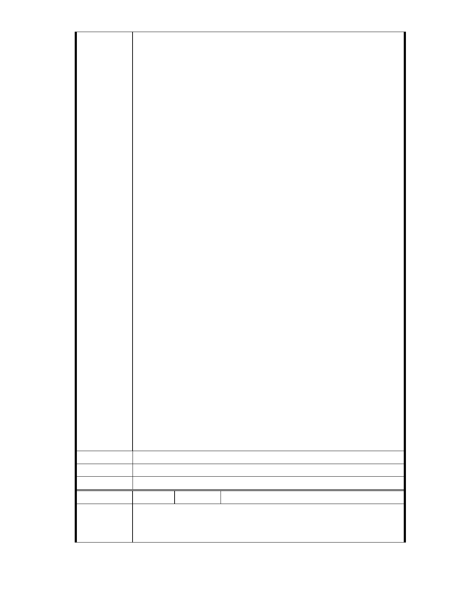

從而讓人不得不懷疑其為反對而反對的背後動機何在?
再者,守護聯盟成員常以其對媒體嫻熟的操弄手法,常藉由媒體提供似是
而非,巧妙捏造的事實,企圖誤導民眾及市府與都發局諸公視聽; 其所企圖
誤導者, 諸如其在聯盟成立大會上所首刊的”真言報”內容所言 – “一場慈
悲而溫柔的掠奪”¸”你希望有 20 公頃可以緩衝的湖泊還是慈濟加持
的志工大樓?”, “組織一個對抗掠奪內湖保護區的團體,持續進行生存安全
的保衛站”; 其在慈濟 11 月 25 日說明會之前,又發傳單於大湖、秀湖兩里
居民信箱, 謂”大湖百姓說 NO! 反對湖畔蓋醫院”, “ 且執意一次次關說
闖關送審,其霸道行為… “ , 此等危言聳聽, 誤導視聽的手法, 在其多次抗
爭行動中大湖里居民已司空見慣.
守護聯盟慣常出現的十幾二十位抗爭成員,常藉媒體力量巧妙自封為代表
大湖地區居民的意見與想法. 兩位里長對抗爭行動的理性平和勸說也常
被移花接木,反白為黑,駕接成反對慈濟開發案的助力. 更有甚者, 慈濟為
了正居民視聽, 在兩位里長協助下在大湖國小舉辦說明會,反對團體卻又
多方阻擾,抗爭兩里里長不得分發說明會公告,不讓說明會如期舉辦,不讓
居民聽到慈濟計劃案的真實內容; 在 11/25 日說明會場外抗爭行動上,更
公然的以 “慈濟信眾->”與”真正的居民”看板, 把一場公開透明的說明
會硬說成是慈濟對志工的內部說明會以圖混淆事實真相.此等無恥行徑該
等團體都能公然施行,真是讓人不齒
凡此種種,不得不讓人對守護聯盟成員之行止不敢茍同,對其背後動機另
眼看待. 都說聽其言,觀其行, 用在此處實屬在恰當不過.
以上多所贅言,無非想藉由此信,把慈濟被刻意汙衊,卻欲言難言的真象代
為呈訴, 期蒙市府長官釐清真象,看到內湖居民的另一面想法,協助慈濟內
湖計劃案克服困難,早日實現,實所至禱.
敬謝不殆, 順頌康安!
一位老大湖里居民 敬呈
12/08/2012
建議辦法
市 府 說 明 相關陳情意見將納入本案審查人民意見，依法定程序辦理。
委 員 會 決 議 同編號 1。
編
號 173
陳情人 MA201212100117、董葆珍
敬愛的市長,都發局長官,
陳情理由
我是台北市內湖區大湖里的老居民
- 235 -